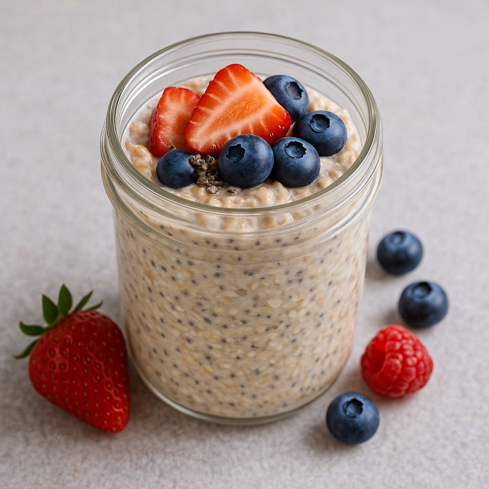

Overnight Oats with Chia and Berries
Yield: 1 serving
Ingredients
- 1/2 cup rolled oats
- 1 tablespoon chia seeds
- 1/2 cup unsweetened almond milk
- 1/4 cup plain Greek yogurt
- 1/2 cup mixed berries
- 1/2 teaspoon cinnamon
- 1 teaspoon honey (optional)
- 1/2 teaspoon vanilla extract (optional)
Instructions
- Combine oats, chia, and cinnamon in a jar.
- Stir in almond milk, yogurt, vanilla, and honey (if using).
- Fold in berries.
- Cover and refrigerate at least 6 hours.
- Stir and add a splash of milk before serving if needed.